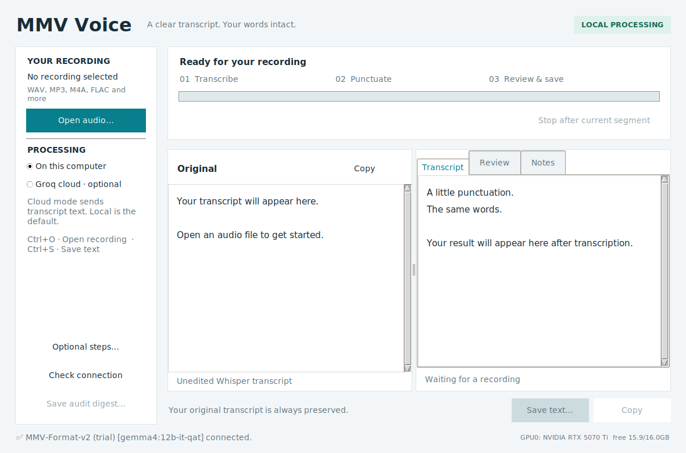
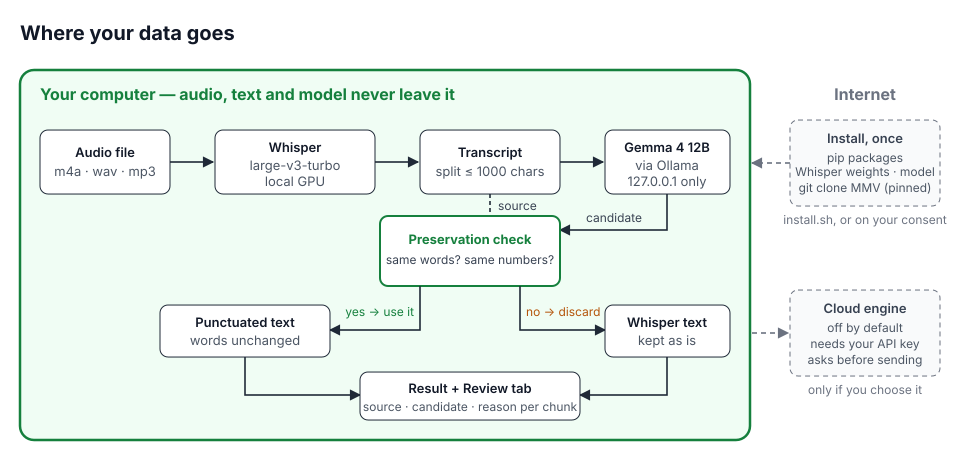
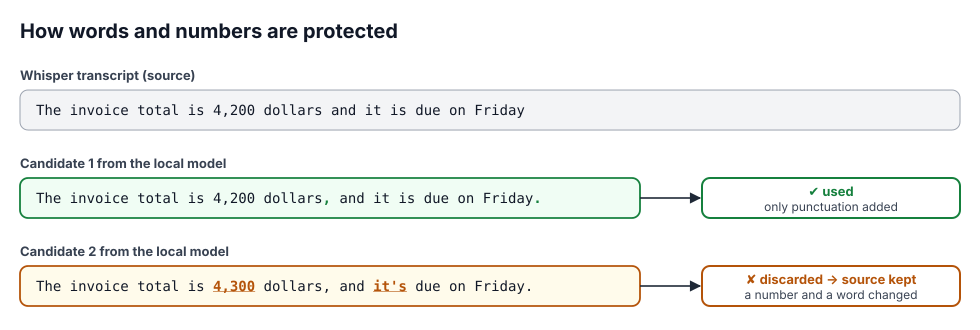

Linux desktop · Local by default
A clearer transcript.
Still your words.
Turn recordings into readable text on your own computer. Whisper listens. MMV adds punctuation. A preservation check keeps your original words intact.
No account or API key for local use. Free software, AGPL-3.0.
We met today the budget is 320 dollars
We met today, the budget is 320 dollars.
Local speech and language models. Cloud processing is a separate, explicit choice.
Original, candidate and preservation result stay available for review.
Copy the transcript, save a text file or keep the full review digest.
One recording. One clear workspace.
Open a recording, follow its progress, then review the original beside the result. Notes and extra checks stay out of the way until you need them.

Source on GitHub README Measured status (2026-09-25) v0.2.4 evidence (2026-09-26) Mandarin reference (2026-09-26) Earlier trial on HOLD (2026-09-24)

Local-first, concretely
- Audio never leaves your computer — Whisper runs locally (GPU if available).
- The model is local and the application enforces it — formatting goes to Ollama on a loopback address; the app refuses any other address before calling the model.
- Network once, at install —
install.shfetches packages, Whisper weights, the model and the MMV harness, asking first. With default settings the tool then makes no network calls while you work; if the Whisper weights are missing, it asks before downloading them (model file only). Opt-in extras — pyannote speaker attribution, the cloud engine — use the network. - Nothing to sign up for — no account, key or licence server for the default engine.
- Cloud is opt-in, twice — off by default, needs your own key, confirms before sending.
Ready when you are.
Check your setup first. The installer asks before downloading anything.
git clone https://github.com/mobius-style/mmv-voice && cd mmv-voice
bash install.sh --check # shows what is missing; changes nothing
bash install.sh # installs locally, asks before every download
bash launch.sh # opens the appLinux desktop, Python 3.10+, ffmpeg, python3-tk, and Ollama running. An NVIDIA GPU with 8–16 GB is recommended. The installer never uses sudo and never starts or stops Ollama.
Using it
- Open an audio file — transcription starts at once, language auto-detected.
- Formatting follows: chunks of up to 1,000 characters go to the local model for punctuation and paragraph breaks.
- Read the result; any chunk that failed the check is shown exactly as Whisper wrote it.
- The "Review" tab shows source, candidate and reason for every chunk.
- Save the text (optional: minutes or a digest file).
How your words are protected

Measured, with limits.
Docs, UI, prompts and tests are written for English. v0.2.4 removes the one sentence that made the model add stray semicolons. On 12 new English FLEURS clips, punctuation now roughly matches Whisper's own (type-aware F1 0.854 vs 0.821, intervals overlap) instead of clearly worse (v0.2: 0.659); v0.2.4 leaves most clips' punctuation alone (7 of 12) and adds punctuation on 4; 11 of 12 clips were accepted, and no word or number was ever changed — the one clip whose candidate changed a word fell back to Whisper's text.
Small read-speech panels; the 95% intervals overlap; FLEURS training overlap unresolved. Details: v0.2.4 evidence.
Long recordings: what to expect today
On a real 17.5-minute, four-person meeting (AMI ES2004a), transcription took 32 s including model load (27 s transcribing) on one RTX 5070 Ti (WER 27% on overlapping, informal speech). Formatting stepped aside on 11 of 12 chunks, returning Whisper's text unchanged — your words stay safe, but on meetings you mostly get Whisper's own punctuation. Observed causes: the MMV governance layer prepended a boilerplate sentence to 6 conversational chunks; in the other 5 the model changed capitalisation, mostly where the 1,000-character split cut a sentence. Two fixes were measured and put on hold: stripping the boilerplate and splitting at sentence ends (v0.3) helped but missed its gate; adding Whisper's condition_on_previous_text=False (v0.3b) removed repetition loops and reached 4 of 5 formatted chunks, but Whisper's automatic language detection then labelled an English meeting as Dutch and WER rose from 43% to 85%. Reports: v0.3, v0.3b.
Measured results
| Panel | Candidate accepted | Source retained | Punctuation-position F1 |
|---|---|---|---|
| English, 12 new clips × 3 (2026-09-26), v0.2.4 | 11/12 clips | 1/12 | 0.846 → 0.878 |
| English meeting, 17.5 min, 12 chunks (AMI), v0.2.4 | 1/12 chunks | 11/12 | — |
| English, 8 held-out clips × 3 (2026-09-24), v0.2 prompt | 8/8 clips | 0/8 | 0.766 → 0.769 |
| Mandarin (reference), 8 clips × 3 (2026-09-26) | 21/24 (7/8 clips) | 3/24 | 0.278 → 0.786 |
| Japanese, 12 new clips × 3, v2 prompt | 91.7% (33/36) | 3/36 | 0.857 |
| Japanese, same clips, previous v1 prompt | 83.3% (30/36) | 6/36 | 0.857 |
| English, same 8 clips, regression (pre-release build) | 8/8 | 0/8 | — |
Acceptance means the candidate passed the preservation check, not that its punctuation is right. The position-accuracy metric is identical for both prompts (paired delta +0.001, 95% CI [−0.089, +0.088]). Small panels, read speech, no population guarantee. Details and failure cases are in the status report.
What it is not
It does not correct transcription errors — a candidate that fixes a misheard word is rejected because the words changed. Punctuation can still alter meaning; the check does not prove semantic fidelity. Mandarin has a small reference measurement; other languages are unevaluated.